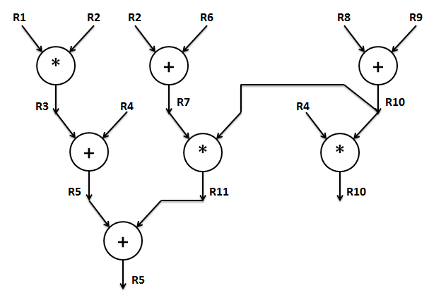

| 4 3 | 6 2
-----------------
0 | 0 0 | 0 0
1 | 1 1 | 1 1
2 | 2 2 | 2 0
3 | 3 0 | 3 1
4 | 0 1 | 4 0
5 | 1 2 | 5 1
6 | 2 0 | 0 0
7 | 3 1 | 1 1
8 | 0 2 | 2 0
9 | 1 0 | 3 1
10 | 2 1 | 4 0
11 | 3 2 | 5 1
The Solution:
Single Error. The corrected bit pattern:
111010010111
When there are two errors, there will definitely be a parity error. However, consider the case where P0 and P1 are the two errors. If we examine the parity errors with the intention of attempting to correct a single error as in the previous example, then we would erroneously think that the 3rd bit (D0) was in error. Clearly, this is not the case. It is also possible that after computing the parity errors, we determine, for example, that bit 15 is in error (all four parity functions evaluated incorrectly). However, the transmitted data only has 12 bits. Thus, if we see that an error points to bits 13 through 15, we know for sure that two errors occurred. However, as described earlier, it is definitely possible that two errors manifest themselves as a single error in one of the 12 bits transmitted.
What happens if there are more than two errors?
More than two errors will manifest itself as a single error, two errors, or possibly even no error at all. This scheme has no way to distinguish more than 2 errors from 2 errors or less.
| Cycle | Multiplier | Temp register |
| 0 | 0001110010 | 0000000000---------- |
| 1 | --00011100 | 000110111100-------- |
| 2 | ----000111 | 00000110111100------ |
| 3 | ------0010 | 1111001111011100---- |
| 4 | --------00 | 000110001011011100-- |
| 5 | ---------- | 00000110001011011100 |
The bias for the 1-8-23 IEEE format is 127.
3EE00000h = 0 01111101 11000000000000000000000 = 1.11 * 2^-2
3D800000h = 0 01111011 00000000000000000000000 = 1.0 * 2^-4
Adjusting exponents, we get
1.11 * 2^(-2)
0.01 * 2^(-2)
Since the exponents are now the same, we can add the two
fractions. The result has the same exponent as the operands. The
result is: 10.00 * 2^(-2). When normalized to IEEE format, this
becomes 1.00 * 2^(-1),
IEEE format: 0 01111110 00000000000000000000000 which in hex is
3F000000h.
Model 0.001: 1-7-8 Smallest positive normalized number is 0 0000001 00000000 = 1.0 * 2^(1-63) = 2^-62 Largest postive normalized number is 0 1111110 11111111 = 1.11111111 * 2^(126-63) = 1.11111111 * 2^63 This model has (8+1) binary bits of precision. Since 1024 (2^10) is approximately 1000 (10^3); 10 binary bits of precision correspond to about 3 decimal digits of precision. Hence, this model has 9 * (3/10) = 2.7 decimal digits of precision Model 0.002: 1-5-10 Smallest positive normalized number is 0 00001 0000000000 = 1.0 * 2^(1-15) = 2^-14 Largest postive normalized number is 0 11110 1111111111 = 1.1111111111 * 2^(30-15) = 1.1111111111 * 2^15 This model has (10+1) binary bits of precision. Hence, this model has 11 * (3/10) = 3.3 decimal digits of precision The model chosen would depend on the application - if a higher range is desired, then model 0.001 is better; if precision is more important, then model 0.002 will be preferred.
48 0 110 10000
19.5 0 101 00111
5/16 0 000 01010
0 0 000 00000
-1 1 001 00000
-infinity 1 111 00000
a) Single processor system - using Horner's rule
(((((ax + b)x + c)x + d)x + e)x + f)x + g
Number of operations = 12 (6 multiplies & 6 adds)
Number of time-steps = 12
b) Using 4 processors: time steps = 5, operations = 15.
One way of doing this is:
| Step 1 | x * x | b * x | d * x | f * x |
| Step 2 | x2 * x2 | a * x2 | dx + e | bx + c |
| Step 3 | ax2 * x4 | (bx +c) * x4 | (dx + e) * x2 | fx + g |
| Step 4 | ax6 + bx5 + cx4 | dx3 + ex2 + fx + g | ||
| Step 5 | ax6 + bx5 + cx4 + dx3 + ex2 + fx + g |
An intuitive proof for why it can't be done in less than 5 time steps:
Lets assume it takes x time steps. In the xth time step, only one operation can be performed (either an add or a multiply) to get the final result. In the (x-1)th time step, at the most two operations can be performed, one each to get each of the operands for the operation in step x. In the (x-2)nd time step & other below, possibly 4 units of work can be found. If x = 4, then theres no way to compute all the operands such that only 3 operations are left to be performed after 2 time steps.
c) Speedup = T1/ Tp = 12/5 = 2.4
|
|
|
|
|
||
| Number of switches in each level |
|
|
|
|
|
| Number of levels (= latency) |
|
|
|
|
|
| Cost | k2 * n/k * logkn
|
|
|
|
|
Reasonable choice depends on whether lower cost, latency, or contention is desired.
For n=64, Using k=64 yields the lowest latency, and k=2 or k=4 yields the lowest cost. If we would like low latency we would choose k to be 64. If we would like lowest cost, we would choose k to be 2 or 4. If we would like to minimize contention, we would choose k to be 64.
Another approach could be to minimize the cost-latency product, in which case we would choose k=8 for n=64.